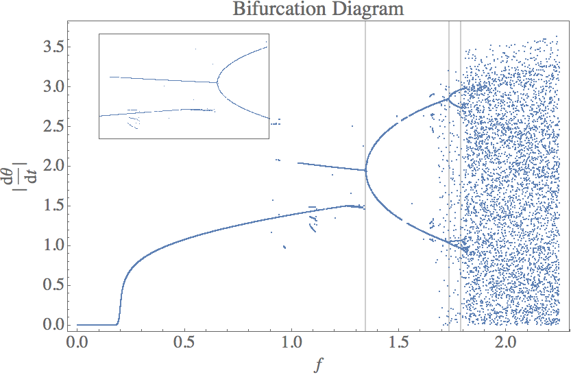

Mikhail Gaerlan
9 October 2015
The equation of motion for a damped, driven pendulum is given by the equation
$\displaystyle{\frac{d^2\theta}{dt^2}=-\alpha\frac{d\theta}{dt}-\left(\omega _0^2+f\cos(\omega t)\right)\sin\theta}$

$\displaystyle{f _1\approx1.345,\;f _2\approx1.735,\;f _3\approx1.790}$
The Feigenbaum constant is approximated to be
$\displaystyle{\lim _{n\to\infty}\frac{f _{n-1}-f _{n-2}}{f _{n}-f _{n-1}}\approx\frac{f _2-f _1}{f _3-f _2}\approx\frac{1.735-1.345}{1.790-1.735}\approx7.09}$